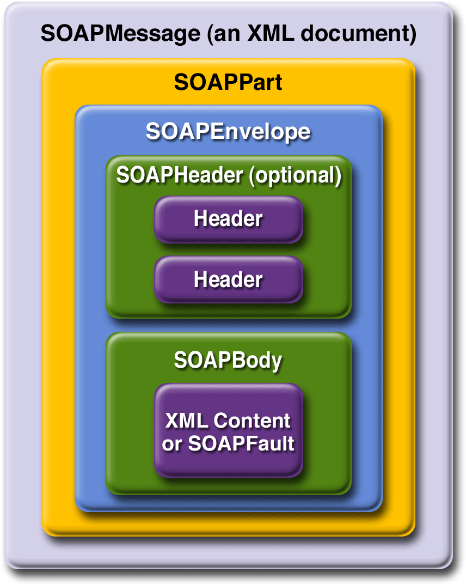
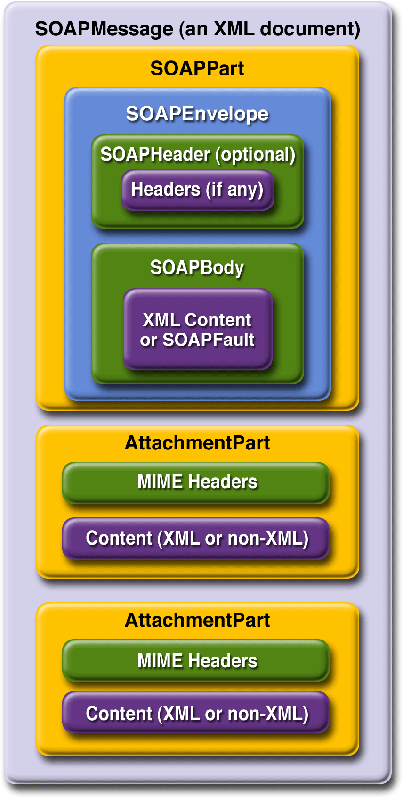

www.netbeans.org
Feedback
java.sun.com
|
Download
www.netbeans.org |
|
API
Feedback java.sun.com |
Overview of SAAJ
This section presents a high-level view of how SAAJ messaging works and explains concepts in general terms. Its goal is to give you some terminology and a framework for the explanations and code examples that are presented in the tutorial section.
The overview looks at SAAJ from two perspectives: messages and connections.
Messages
SAAJ messages follow SOAP standards, which prescribe the format for messages and also specify some things that are required, optional, or not allowed. With the SAAJ API, you can create XML messages that conform to the SOAP 1.1 and WS-I Basic Profile 1.0 specifications simply by making Java API calls.
The Structure of an XML Document
An XML document has a hierarchical structure made up of elements, subelements, subsubelements, and so on. You will notice that many of the SAAJ classes and interfaces represent XML elements in a SOAP message and have the word element or SOAP (or both) in their names.
An element is also referred to as a node. Accordingly, the SAAJ API has the interface
Node, which is the base class for all the classes and interfaces that represent XML elements in a SOAP message. There are also methods such asSOAPElement.addTextNode,Node.detachNode, andNode.getValue, which you will see how to use in the tutorial section.What Is in a Message?
The two main types of SOAP messages are those that have attachments and those that do not.
Messages with No Attachments
The following outline shows the very high-level structure of a SOAP message with no attachments. Except for the SOAP header, all the parts listed are required to be in every SOAP message.
I. SOAP message
A. SOAP part
1. SOAP envelope
a. SOAP header (optional)
b. SOAP body
The SAAJ API provides the
SOAPMessageclass to represent a SOAP message, theSOAPPartclass to represent the SOAP part, theSOAPEnvelopeinterface to represent the SOAP envelope, and so on. Figure 3-1 illustrates the structure of a SOAP message with no attachments.
Note: Many SAAJ API interfaces extend DOM interfaces. In a SAAJ message, the
SOAPPartclass is also a DOM document. See SAAJ and DOM for details.
When you create a new
SOAPMessageobject, it will automatically have the parts that are required to be in a SOAP message. In other words, a newSOAPMessageobject has aSOAPPartobject that contains aSOAPEnvelopeobject. TheSOAPEnvelopeobject in turn automatically contains an emptySOAPHeaderobject followed by an emptySOAPBodyobject. If you do not need theSOAPHeaderobject, which is optional, you can delete it. The rationale for having it automatically included is that more often than not you will need it, so it is more convenient to have it provided.The
SOAPHeaderobject can include one or more headers that contain metadata about the message (for example, information about the sending and receiving parties). TheSOAPBodyobject, which always follows theSOAPHeaderobject if there is one, contains the message content. If there is aSOAPFaultobject (see Using SOAP Faults), it must be in theSOAPBodyobject.

Figure 3-1
SOAPMessageObject with No AttachmentsMessages with Attachments
A SOAP message may include one or more attachment parts in addition to the SOAP part. The SOAP part must contain only XML content; as a result, if any of the content of a message is not in XML format, it must occur in an attachment part. So if, for example, you want your message to contain a binary file, your message must have an attachment part for it. Note that an attachment part can contain any kind of content, so it can contain data in XML format as well. Figure 3-2 shows the high-level structure of a SOAP message that has two attachments.

Figure 3-2
SOAPMessageObject with TwoAttachmentPartObjectsThe SAAJ API provides the
AttachmentPartclass to represent an attachment part of a SOAP message. ASOAPMessageobject automatically has aSOAPPartobject and its required subelements, but becauseAttachmentPartobjects are optional, you must create and add them yourself. The tutorial section walks you through creating and populating messages with and without attachment parts.If a
SOAPMessageobject has one or more attachments, eachAttachmentPartobject must have a MIME header to indicate the type of data it contains. It may also have additional MIME headers to identify it or to give its location. These headers are optional but can be useful when there are multiple attachments. When aSOAPMessageobject has one or moreAttachmentPartobjects, itsSOAPPartobject may or may not contain message content.SAAJ and DOM
In SAAJ 1.2, the SAAJ APIs extend their counterparts in the
org.w3c.dompackage:Moreover, the
SOAPPartof aSOAPMessageis also a DOM Level 2Documentand can be manipulated as such by applications, tools, and libraries that use DOM. For details on how to use DOM documents with the SAAJ API, see Adding Content to the SOAPPart Object and Adding a Document to the SOAP Body.Connections
All SOAP messages are sent and received over a connection. With the SAAJ API, the connection is represented by a
SOAPConnectionobject, which goes from the sender directly to its destination. This kind of connection is called a point-to-point connection because it goes from one endpoint to another endpoint. Messages sent using the SAAJ API are called request-response messages. They are sent over aSOAPConnectionobject with thecallmethod, which sends a message (a request) and then blocks until it receives the reply (a response).SOAPConnection Objects
The following code fragment creates the
SOAPConnectionobjectconnectionand then, after creating and populating the message, usesconnectionto send the message. As stated previously, all messages sent over aSOAPConnectionobject are sent with thecallmethod, which both sends the message and blocks until it receives the response. Thus, the return value for thecallmethod is theSOAPMessageobject that is the response to the message that was sent. Therequestparameter is the message being sent;endpointrepresents where it is being sent.SOAPConnectionFactory factory = SOAPConnectionFactory.newInstance(); SOAPConnection connection = factory.createConnection(); . . .// create a request message and give it content java.net.URL endpoint = new URL("http://fabulous.com/gizmo/order"); SOAPMessage response = connection.call(request, endpoint);Note that the second argument to the
callmethod, which identifies where the message is being sent, can be aStringobject or aURLobject. Thus, the last two lines of code from the preceding example could also have been the following:String endpoint = "http://fabulous.com/gizmo/order"; SOAPMessage response = connection.call(request, endpoint);A web service implemented for request-response messaging must return a response to any message it receives. The response is a
SOAPMessageobject, just as the request is aSOAPMessageobject. When the request message is an update, the response is an acknowledgment that the update was received. Such an acknowledgment implies that the update was successful. Some messages may not require any response at all. The service that gets such a message is still required to send back a response because one is needed to unblock thecallmethod. In this case, the response is not related to the content of the message; it is simply a message to unblock thecallmethod.Now that you have some background on SOAP messages and SOAP connections, in the next section you will see how to use the SAAJ API.
|
Download
www.netbeans.org |
|
API
Feedback java.sun.com |
All of the material in The J2EE(TM) 1.4 Tutorial is copyright-protected and may not be published in other works without express written permission from Sun Microsystems.